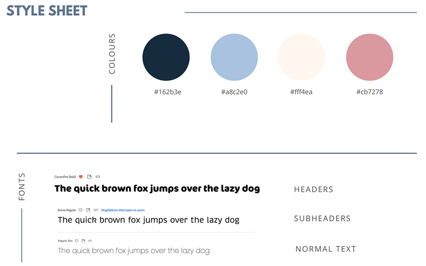

General Information
This branded website is publicly available at grittynl.github.io/gritty/
This website was created by…
- Urte Jonaviciute (ID: 231077)
- Tereza Bugarova (ID: 235491)
- Fenne van den Oever (ID: 230798)
- Guus de Beer (ID: 235045)
Content
Brand Name & Logo
We decided to call our back brace brand Gritty since it perfectly captures the distinct personality of dachshunds. Despite their diminutive stature, dachshunds are courageous, tenacious, full of attitude; they face challenges head-on and never back down. This is the attitude that we want to capture in our brand. This type of perseverance is frequently referred to as “grit”- the ability to persevere in the face of adversity by combining courage, passion, and resilience. Grit is defined as bravery and courage
We started by thinking of what could make the logo define the brand. We all came to a consensus that we wanted some kind of resemblance of a dachshund. We also thought about adding an element to represent care which led us to trying out adding hands or hearts. Here are our first sketches:
After solidifying our final colour palette based on our marketing research, we went on to develop better quality drafts of our logo. We decided to keep going with the heart-shaped logo as we felt it was the most unique and represented our values best.

We also wanted to use a brand mark for smaller applications (apps, garments etc):

After some feedback from the team, we decided to choose the first version of the primary logo but make the colour swatches smoother since the texture seemed like a mistake.Here are the final versions of the logo, secondary logo and brand mark:
Vision
In a world where dachshunds are part of families, we believe this caring goes beyond the basic necessities like taking a walk, serving food and petting. In a perfect world everyone can give back the unconditional love they receive from their dog.
Mission
Through thoughtful design and lively expression, we aim to provide a solution for your devoted friend.
Values
Please clarify here the match between students and pieces of content. Make sure that you provide a link to the correct page within the website
| # | Student ID | Value | Name and link of content |
|---|---|---|---|
| 1. | 231077 | Trusted Support | Value: trusted support |
| 2. | 235491 | Lively Expression | Value: lively expression |
| 3. | 230798 | Proactive Care | Value: proactive care |
| 4. | 235045 | Devoted Friendship | Value: devoted friendship |
Visual Identity
Colours: We essentially chose the colours blue and orange. Blue stands for reliability and high quality and orange for excitement. After evaluating our target group and marketing tactics we were turning more towards female preference that is why we changed orange to pink. This enlightens the more feminine side. We used the split complementary theory because of the contrast that creates a boldness that separates us from competitors.
Colour palette:
Stylesheet: 
Typography:
Supporting visuals:
The visuals of Gritty are designed to embody the brand. High-end lifestyle photography showcases the back brace in real, everyday situations with dachshunds. Graphics aren't about looks alone, they're a story of devoted friendship and thoughtful craftsmanship, inviting the viewer to an emotional relationship with the product.
Production
Design Elements
Please provide a list of design elements alongside their justifications:
-
A colour scheme (with HTML colour codes, which must be consistent with your final website)
— see the example below from the BUas brand book:
- #EE7622 The orange colour refers to the Dutch identity and the city of Breda (Oranjestad). Orange stands for…
- #00406B Dark blue signifies…
- Font choices
- User interface patterns (e.g. grids, carousels, menu organizations etc.)
- The structure of the navigation and content (e.g. how content units are distributed across pages)
- All these elements must be justified by referring to the theory and/or vocabulary of design
- Please relate these elements to other units, for example:
- How does website design fit the values and personality of the brand?
- How does website design fit the marketing and communication strategy?
- How does website design help showcase the unique value proposal of the product?
Credits
Please provide links and/or credits for third-party elements including:
- HTML templates if these are different from this one (buas-media-interactive/prj4-group-template)
- The source code for UX patterns other than the ones provided by the “Bootstrap” library (see getbootstrap.com/docs for a list of such patterns)
- Images that were not produced by students themselves, including when crediting is not mandatory (in other words, we ask you to credit Unsplash images)
Testing Report
Test Protocol
The goals of the user testing are:
- To search for errors and problems that users experience
- To evaluate the usability, user friendliness, design choices, and navigation
- To evaluate the brand and product concept clarity
- To evaluate if the website is appealing to our target audience
- To evaluate if the website communicates our values
- To get feedback from them in order to ensure an improved, well-functioning version of the website that fulfils its communication purpose
Test participants:
Each of us is going to test the website with at least two participants from our target group. They will be between the ages of 20-30 years old, male and female (our primary and secondary target).See details of the target audience below:
- Geographics: The Netherlands
- Demograhic: Smaller and younger families with higher income and education, geared towards women
- Behavioral: They purchase online and spending is not affected by the economic state (Gupta, 2025), low loyalty status because they follow trends. They use social media mostly for entertaining content. They use TikTok and Instagram most of the time for entertainment and Facebook for community groups.
- Psychographics: More active lifestyle, they value quality, companionship, fun and health, and social interaction
Key research question:
Is the website user-friendly, easy to navigate, is the brand and product concept clear to the users, is the website appealing, and does it communicate our values?
Test setting:
The testings are going to be conducted in person on phones, tablets, and laptops, to ensure that the website responds well to all devices. Some of them will be in person on campus, some will be held online. We are going to start with a brief introduction of our brand and explain how the testing is going to be conducted. The users will be given tasks and observed, but they will not be given instructions, and there will be no interference unless help is needed. The testing will be recorded for later research purposes upon agreement from all parties involved.
The context:
You are a dachshund owner who is struggling and in search of a functional, yet stylish and customizable back brace for your dog. You love and care for your dachshund, and you want to do all in your power to help prevent spinal complications that tend to arise later in their lives due to the unique shape of their bodies. You don’t only care deeply about high quality, but also about fashion and style. You want your dog to look stylish all year round. You found Gritty, and you're contemplating whether this brand is trustworthy and worth investing in.
Tasks to complete:
- Find our product and its features.
- Try to make a consultation for a back brace.
- Find the customer testimonials.
- Can you find our vision and mission statement?
- Find the team behind Gritty
- Find our social media links and try following us on Instagram.
After completing all the tasks listed, we will ask them for feedback, identify their pain and improvement points.
- Was the website easy to navigate?
- Was the website user-friendly and easy to use?
- Was anything confusing?
- Was there anything especially frustrating?
- How did you feel while going through the different pages?
- Did you understand what the product is?
- How was your experience with filling in the consultation form?
- Was the messaging clear?
- Was anything unclear?
- What did you think of the supporting images and logos?
- Is the font easy to read?
- How do you feel about the color combinations?
- Did you see anything that made you feel happy?
- Would you trust this brand?
- Did you particularly like or dislike anything?
- Would you add/remove anything?
- Do you have any suggestions for improvement?
- Would you recommend this website to somebody else?
- Would you use it yourself?
Test findings:
All users expressed that the navigation and usability were clear, smooth, easy, relaxed, and intuitive. One user appreciated the headings for navigation and division of the page, while others would like to see drop-down menus (for our services, about us…) or more pages listed in the navigation bar. They experienced difficulties while finding the product, the testimonials, the vision, and the mission. A user expressed that she would like to see a more personal touch in the contact form.
The users understood what the product was, but they would like to see pricing, more product features, visuals, or reviews.
Users found the content and messaging clear, concise, and easy to understand. They generally liked the color scheme, logo, fonts, and the visuals of dogs – they were perceived as warm, trustworthy, and clean. However, the pictures and text were misaligned on the mobile version. The text was too close to the visuals, and the pictures were cropped or cut off.
All users found the brand professional and trustworthy, especially due to the contact option and social media links. The Instagram and TikTok links worked well, but they would place them on the footer of every page, not just on About Us. They would use it themselves and recommend it to others.
Suggested improvements
- Fix the issues with the mobile version – misalignment of pictures and text, and cropped and cut off images
- Create more individual pages or drop-down menus for parts such as product features, customer testimonials and reviews, mission, vision, and the team behind Gritty
- Add more product information – visuals, features
- Add pricing information
- Make the contact form more personal and make the button stick (not move while scrolling) in the right corner of all pages
- Add social media links to the footer of all pages
Improvements that have been applied:
- Images on the mobile version are no longer cut off
- The contact form has been adapted to be more personal
- Social media links have been added to all pages
The remaining suggested improvements haven’t been implemented because they have been too complex to adjust until the deadline.
Marketing
Context of campaign and promotional activities
The campaign is for promoting a pet product brand – Gritty, specifically designed for teckels (dachshunds), with a primary focus on enhancing pet well-being while integrating elements of fashion and functionality. The campaign is tailored to appeal to younger, higher-income families in the Netherlands, particularly women who lead active lifestyles and value quality, companionship and well-being in their lives. This group was chosen because of emerging demographic and behavioural trends in pet ownership, particularly among Millennials and Gen Z.
The promotional activities for this campaign were executed through a one-month content calendar focused on storytelling, education, and audience engagement. The content was distributed across TikTok and Instagram—the most relevant platforms for the target audience, as both are primarily used by people under 35 years old for entertaining and lifestyle content (Duarte, 2025; Statista, 2024). These platforms were chosen based on media consumption data, visual-centric design and the strategy was supported by specific post timing to maximize engagement (Sharma, 2025; Suresh, 2025).
The campaign objectives, as defined in the Communication & Media Plan, were structured using the SMART method. The reach objective was to achieve 2,000 views per TikTok video within 1 month, based on Statista's (2024) data showing small accounts can average around 2,665 views. The effect objective aimed to create a sense of “stylish care,” reflecting the brand’s identity and values. The response objective was to reach a 5% engagement rate on TikTok and Instagram within 1 month, aligned with industry standards for small accounts (Smith, 2025).
Introductory content like “Get to know Gritty” and “What does Gritty mean?” published on Instagram helped establish the brand’s identity and emotional tone, supporting the affect objective by creating a sense of stylish care and connection. Educational TikToks such as “3 signs your dachshund may have back problems” and “What back pain looks like in dachshunds” positioned the brand as a trusted source and increased reach through relevant content for the audience (Langellotti, 2024). Interactive posts, such as Instagram story polls, encouraged customer participation helping reach the response objective by boosting engagement rates (Melkko, 2018). Testimonials and user reviews helped with building authenticity, social proof and trust with the target audience that values real, relatable experiences (Scout, n.d.)
These promotional tactics were chosen to build trust in the brand, while also humanizing pet ownership through emotional storytelling, trends such as #dogmom and #furbabies and shared values of well-being and companionship (Willis, 2023).
Learning Points
Objectives:
What did we learn?
Shorter videos seem to work better. From looking to our analytics we noticed most viewers have an attention span of about 10 seconds before they swipe to a new video. So that means we need to put the information we want to convey to the viewer within 10 seconds. For us Instagram is most useful to build customer relationship, because of this being the platform where the most conversation is taking place. TikTok is better for creating awareness for our brand since it is easier to reach more people. The best scoring post, engagement wise, on both platforms is the following one - TikTok video. It is a slightly different video as this has a funnier sound/side to it. This could make people liking it more. So, in the future it would be good to look into funny content while remaining loyal to our brand values.
What did we expect?
We now have an engagement percentage of 5.8%. Which is only a difference of 0.1 compared to what we had in mind.
What did we not expect?
We barely noticed any difference between content with and without call to actions. We used CTA's like: "Follow us to get more insights" or invite to react in comments, however nnone of them affected our metrics. We did not come close to the reach objective; we only got an average of 633 views per video on TikTok. This is only 31,5 percent of what we wanted to reach. Although we noticed a slight growth in the last week, where the average was 765 views.
Future Planning
If the project were to continue, we would focus on optimizing and differentiating the content strategy across our social media platforms – TikTok and Instagram, based on what performs better on which one.
On TikTok, short and fast-paced videos performed the best. The carousels had an average of 556 views, longer videos had 665 views, and shorter videos had 746 views. A short video generated 61 likes, which is 3-4 times more than the carousels.
We would continue posting short and long videos to increase brand awareness, but fewer carousels because of their worse performance. We would focus more on showing real faces rather than generic content, due to the users' preference. Some posts would include: day in the life, pet voiceover, educational fact carousel, product features, pet care myth-busting, or a pet dance trend.
TikTok users prefer funny and trendy content. TikTok For Business (2024) states that 30% of their users expressed that humor was a top motivation for purchase intent. Out of categories such as creative, relaxing, inspirational, funny, or informative, funny scores the highest, while informative content scores much lower, being two times less popular in comparison to Instagram (Henderson, 2025). We saw that serious content doesn’t perform as good on TikTok, that’s why we would focus on more funny content and trends. Hopping on TikTok trends works well even for serious brands, such as Ryanair or Duolingo. It generates a lot of views, customer engagement, and establishes a positive brand image. While joining trends, we would adapt them to match our higher-end brand, not to lose our seriousness and credibility.
Based on our findings, Instagram works well for building customer relationships, which aligns with our goals. We would post, for example, a behind-the-scenes story, customer testimonial reel, informational carousel, this or that poll, or a day in the life reel. According to Henderson (2025), funny content ranks the highest on Instagram, while informative content takes the 3rd place, in comparison with TikTok, where it takes the 6th place. Between Instagram and TikTok, Instagram is the platform to post educational content.
Currently, we posted only 5-6 times per week together on both platforms. We would increase this to 1-3 per day on each platform, because that is the ideal posting frequency according to Anderson (2024). Their findings show that posting frequency has a direct influence on visibility and engagement. Before, we used to post at different times on different days. Now, the schedule would be fixed with Instagram posts at 7 AM, 7 PM, and TikTok posts at 9 AM, 9 PM for consistency.
Future Content CalendarProfessionalism
Present and organize below all social media/online activities of the campaign. Context and material are according to the brand style, image, and vision. Images on the site are of high-quality, readable, and properly designed.

Management
Lean Canvas

Problem
- List your top 3 problems you solve for your target group(s).
- Describe briefly how the problems are solved now (existing alternatives).
Solution
- Outline the brand solution(s) you have for the above problem(s).
Customer segments
- List your target customers and/or users.
- Describe briefly the characteristics of your ideal customer (early adopter, brand persona).
Unique value proposition
- With a single, clear compelling message, state why your brand idea is different and worth paying attention to.
Unfair advantage
- List the aspect(s) of your brand that cannot easily be copied, also called your sustainable competitive advantage(s).
Channels
- List your main path to customers.
- How do you reach them? What channel(s) do you use.
Key metrics
- List the key numbers that tell you how your brand experience is doing.
- For example amount of users, downloads, visitors, subscriptions, sales etc. Numbers you are able to measure.
Revenue streams
- List your sources of revenue: describe the revenue model and the (different) revenue stream(s).
Cost structure
- List your main costs: define the fixed and variable costs.
- Calculate the cost per unit.
Services/products
- State what your product and/or service is and how this contributes to your unique value proposition.
- Clarify the fit between the product/service developed and the brand identity/brand image.
Validation of Assumptions
Write a reflection on the choices made in creating choosing the trademark, including an analysis of the existing alternatives.
Appendix
Please use the list below to provide links to evidence for all parts of your justication. Please double-check all links before delivering the website. Do not hesitate to refer to these numbers above.